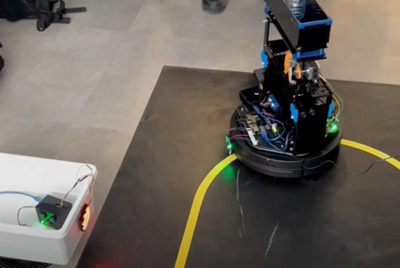

Project Details
Introduction
In this project, an algorithm was developed to control a robotic system designed for recycling tasks. The system comprises several components: a Q-RM robot for handling recycling objects, a Q-bot for transporting these objects, and an A-bot for returning to the home position after completing the recycling task.
The process begins with the Q-RM robot grabbing recycling objects from a dispenser and placing them into the Q-bot. The Q-bot then uses a line-following algorithm to navigate to the correct bin location based on the color of the bin. Once at the bin, the Q-bot deposits the trash and returns to its starting position.
This project was first simulated in a virtual environment using Quanser Interactive Q-labs. After successful testing and validation in the virtual environment, the algorithm was implemented in the real world.
Virtual Simulation Details
The virtual simulation involved configuring the servo table and bins with specific angles and color codes. The Q-RM and Q-bot robots were controlled through a series of commands to handle and process recycling objects. The simulation was coded to manage container release, loading, transport, and deposition operations.
Key features included:
- Release and load containers based on predefined conditions.
- Use of line-following and color sensors for navigation.
- Deposit containers into bins based on their color.
- Return the Q-bot to the home position after depositing the trash.
Real-World Implementation
The real-world implementation involved adapting the virtual simulation code to work with physical hardware. This included configuring the robots with actual servo motors, sensors, and other components to perform recycling tasks in a real environment.
The real-life system maintained similar functionality as the virtual simulation but required additional calibration and testing to ensure proper operation with physical components.